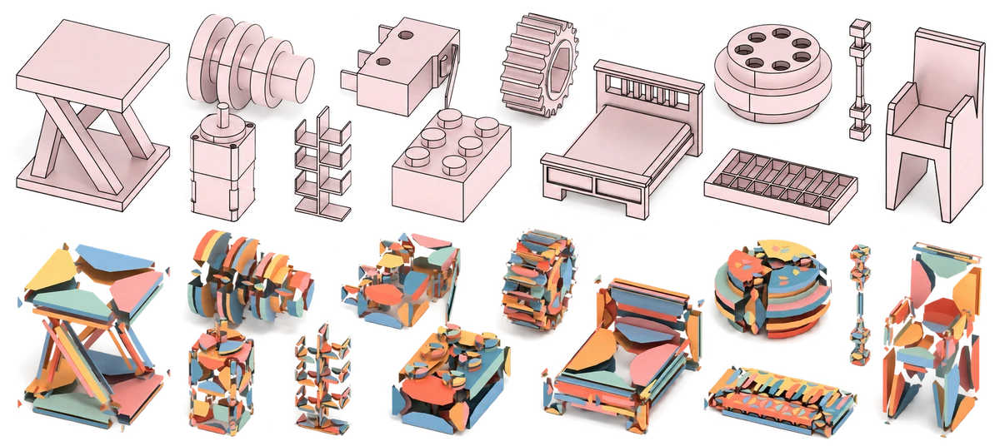
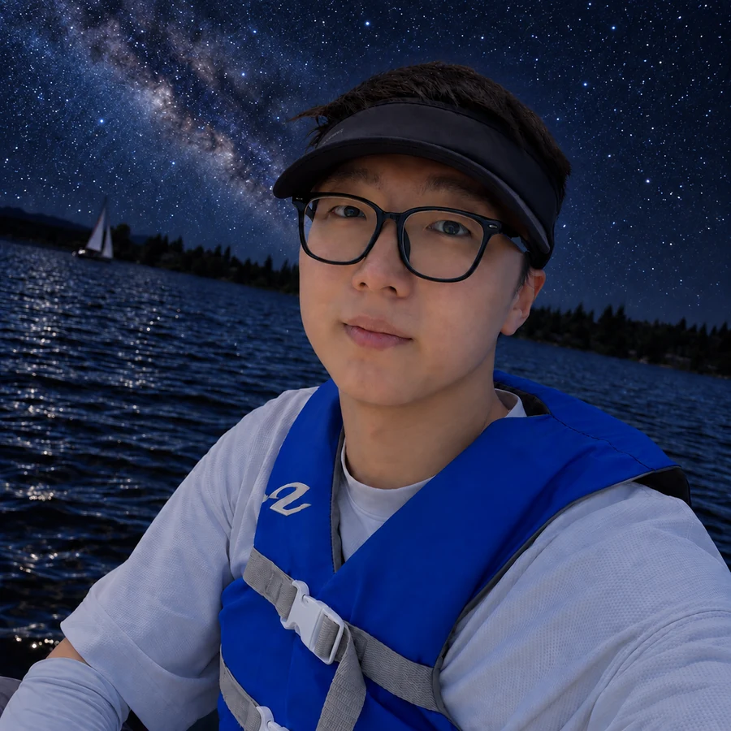

Pu Li李朴
I work on 3D generative AI, with a focus on representations that connect learning-based methods with geometric design.
I received my Ph.D. from the Institute of Automation, Chinese Academy of Sciences (CASIA), advised by Prof. Dong-Ming Yan. I currently work at Huawei with Chen Yang and Jiemin Fang.

Publications
2023–2025∗ Equal contribution.